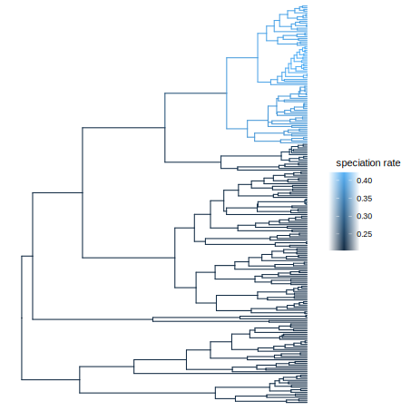

Tiny rate analysis
Here is an example of an analysis of branch-specific rates under the birth-death model. We use a State-dependent Speciation Extinction (SSE) model, with a K-sized state space, in order to get at the question of rate heterogeneity across branches. The Binary SSE model (BiSSE) was first introduced to study rate variation in association with trait data, i.e. each species was assigned a state at the tips of the tree. In our approach, however, we don't use trait data, and consider the tip states unknown, and equally probably for all states at the tips.
Load and read files
First, we load the necessary modules and read in the tree file.
using Distributions
using Diversification
phy = readtree(Diversification.path("primates.tre"))
ρ = 0.67
data = make_SSEdata2(phy, ρ)SSE model
Next, we set up the SSE model, including its dimensionality and hyperparameters. For this model, we will draw the speciation rate (λ) and extinction rate (µ) from LogNormal distributions. We pick the median of the LogNormal distributions such that they correspond to the maximum-likelihood estimates of the constant-rate birth-death model. We pick the variance as H = 0.587, which corresponds to a LogNormal distribution whose 2.5%-97.5% quantile spans one order of magnitude.
λml, μml = estimate_constant_bdp(data)
H = 0.587
n = 6
dλ = LogNormal(log(λml), H)
dμ = LogNormal(log(µml), H)
λquantiles = make_quantiles(dλ, n)
µquantiles = make_quantiles(dμ, n)
λ, μ = allpairwise(λquantiles, µquantiles)Next, we estimate the rate shift parameter η under the SSE model, conditional on the hyperparameters for λ and µ.
η = optimize_eta(λ, µ, data; lower = 0.0001, upper = 0.1)This allows us to set up the SSE model object:
model = SSEconstant(λ, μ, η[1])Likelihood
With the model and data objects we can for example calculate the loglikelihood
logL_root(model, data)Branch likelihoods
Or we can compute both the postorder and preorder pass, and get the expected speciation and extinction rates per branch:
res = bds(model,data)Plot using R and ggtree
If we want to plot the results, we can use the module RCall.
using RCall
phy = res.phy
lambda = res.lambda
mu = res.muJulia objects can be exported to an R session using the macro @rput, (and retrieved from R with @rget).
@rput phy
@rput lambda
@rput muR code can be called by prefixing a string with R, e.g. R"print()", or multiline R"""...""". You can also enter the R session interactively through the Julia REPL by entering the character $. Here we plot the phylogeny using some R-packages that we load first.
R"""
library(ape)
library(tidytree)
library(tibble)
library(ggtree)
class(phy) <- "phylo"
th <- max(node.depth.edgelength(phy))
lambda_average <- lambda
df <- tibble("node" = 1:max(phy$edge),
"speciation rate" = lambda_average,
"netdiv" = lambda - mu)
x <- as_tibble(phy)
phydf <- merge(x, df, by = "node")
td_phy <- as.treedata(phydf)
p <- ggtree(td_phy, ggplot2::aes(color = `speciation rate`))
plot(p)
"""